WWDC 2022: Design App Shortcuts
Find hereafter a detailed summary of the above named video which belongs to a taxonomy of some WWDC footages.
The original video is available on the official Apple website (session 10169).
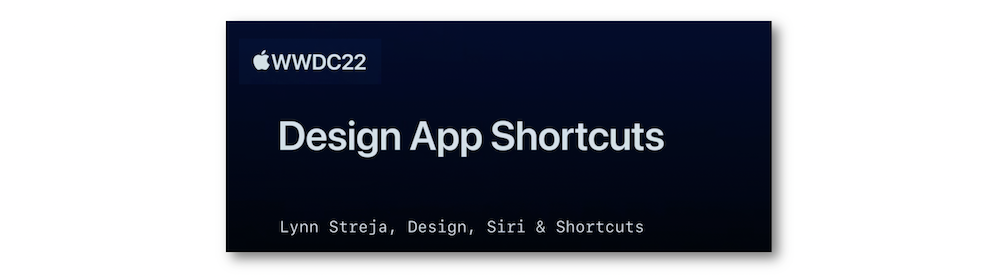
"Learn how you can surface great features from your app directly in Siri, Spotlight, and the Shortcuts app. We'll introduce you to App Shortcuts, provide best practices to help you evaluate features in your app that would work well as App Shortcuts, and take you through the process of creating one of your own. Learn how to create clear and memorable names, design custom visuals, collect required information, and create discoverable shortcuts."
Most of the illustrations are parts of the Apple presentations and may be available at the Resources section inside the Overview sheet of each video.
Hereafter, the underlined elements lead directly to the playback of the WWDC video at the appropriate moment.
Overview #
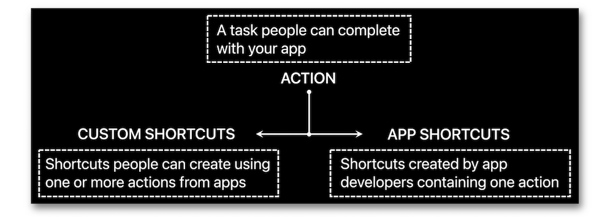
New in iOS 16, the "Add to Siri" button isn't necessary anymore for making a shortcut ready to be used.
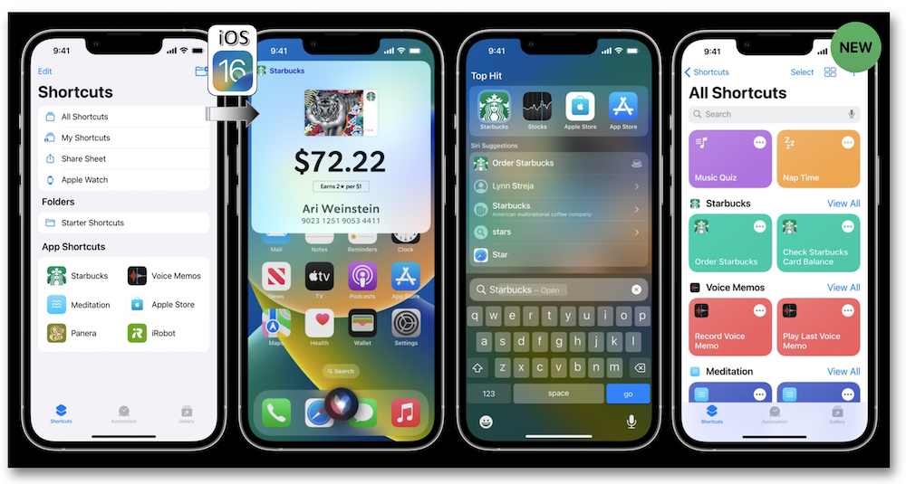
Naming #
Few basic principles are to be taken into account for creating efficient shortcuts whose maximum number can't exceed 10 for an app.
Appearing in some iOS native functionalities, the shortcut's naming is as essential as the accurate identification of the feature to which it's refering.
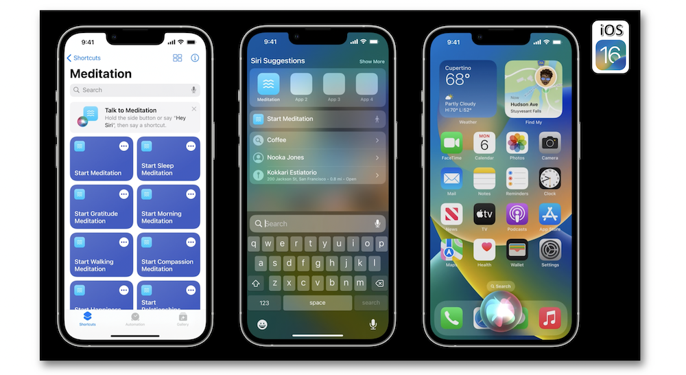
This designation should be brief and include the localized app name or one of its alternatives provided on the App Store.
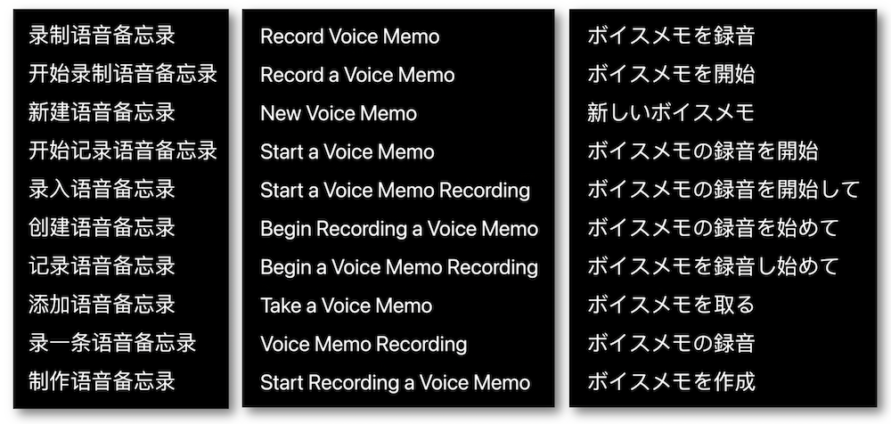
Finally, this naming may insert a dynamic parameter that:
-
Is limited to one in a phrase.
-
Is to be included in an exhaustible list (if need be).
-
Updates and creates as many shortcuts as parameter values.
-
Is never to be completed by optional elements that may be interpreted as dynamic values.
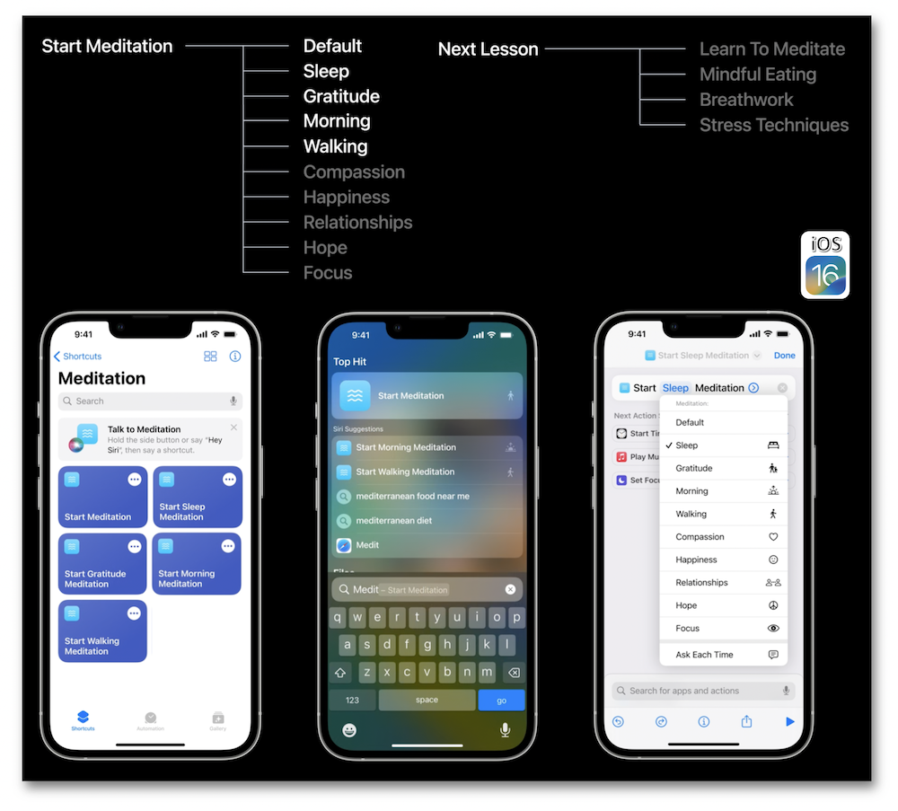
Eventually, an effective naming should encompass the various concepts featured hereabove.
Appearance #
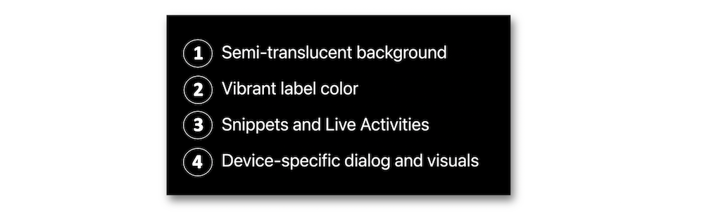
The semi-translucent material of snippets should be harnessed to the fullest instead of customizing the background area.
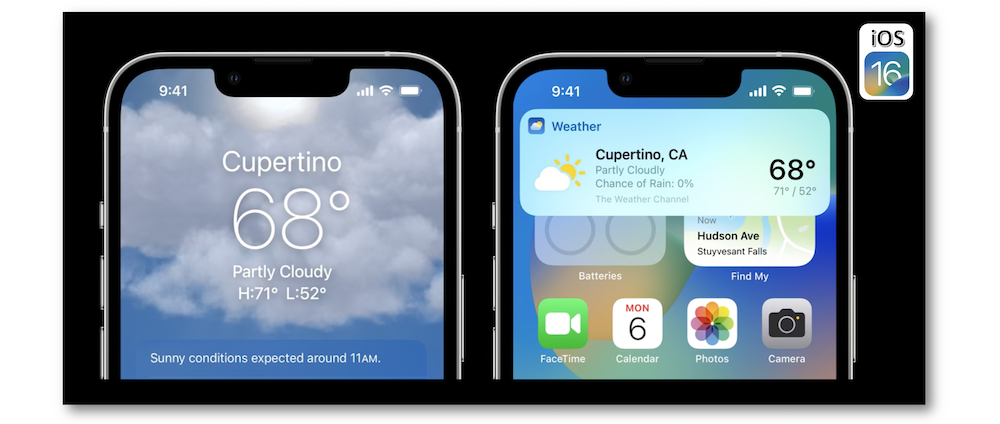
Using vibrant label colors ensure both an appropriate contrast and an automatic adjustement of the Dark mode.
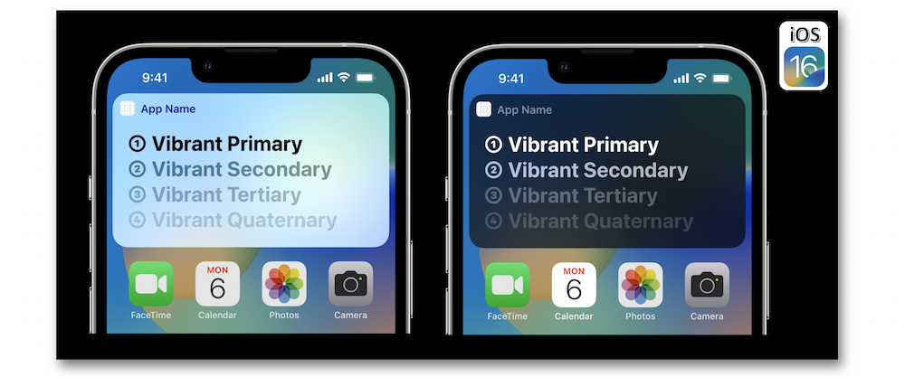
Rehearsals in snippets are to be avoided and the crucial Intent Confirmation used for significant actions should be defined before making sure that the full-range of iOS devices is taken into account to offer the best user.
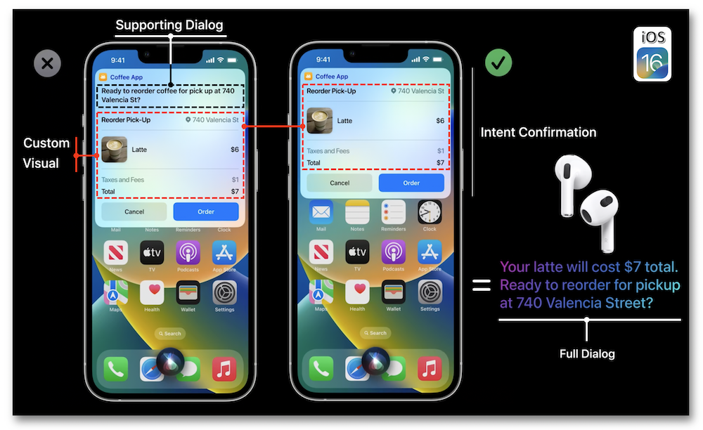
The buttons of the Intent Confirmation are always to be undoubtedly named for preventing any ambiguity.
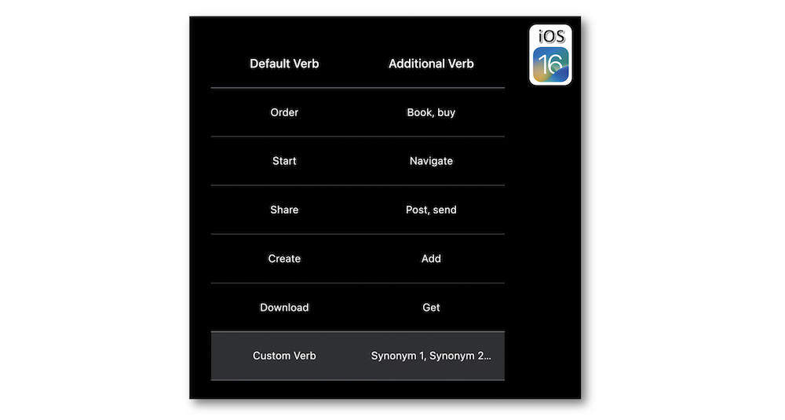
And new in iOS 16, the support of custom snippets is available for Apple Watch⟹ 🎬
Among the various ways for discovering shortcuts, Spotlight points out a conspicuous symbol on the right side of a shortcut's name...
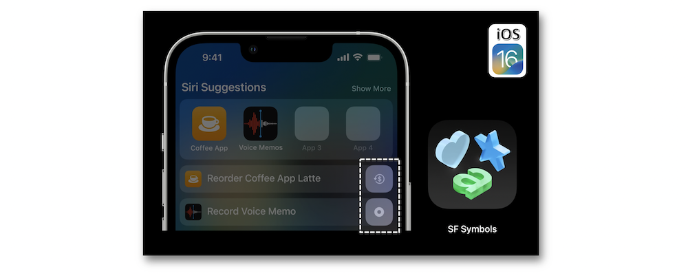
... while adopting the possible order the app shortcuts appear.
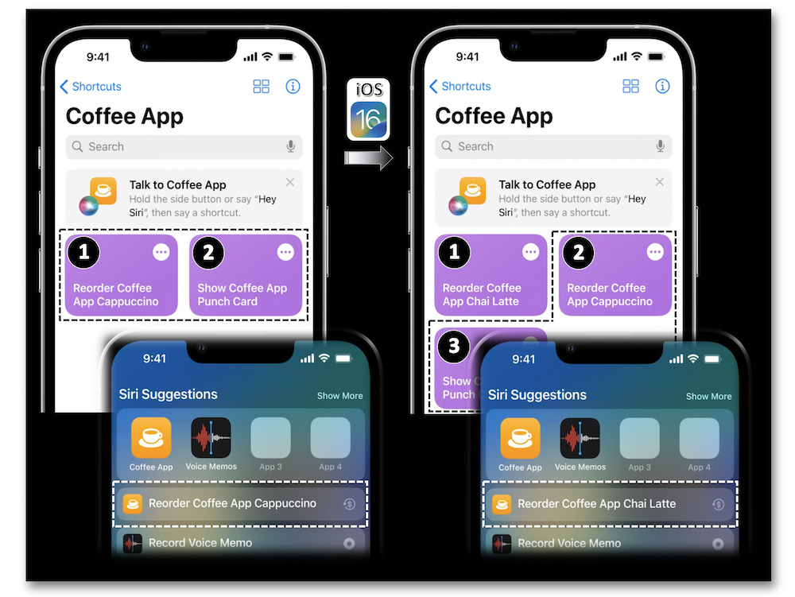
Interaction #
Asking for more information inside shortcuts may rely on three different possible ways.
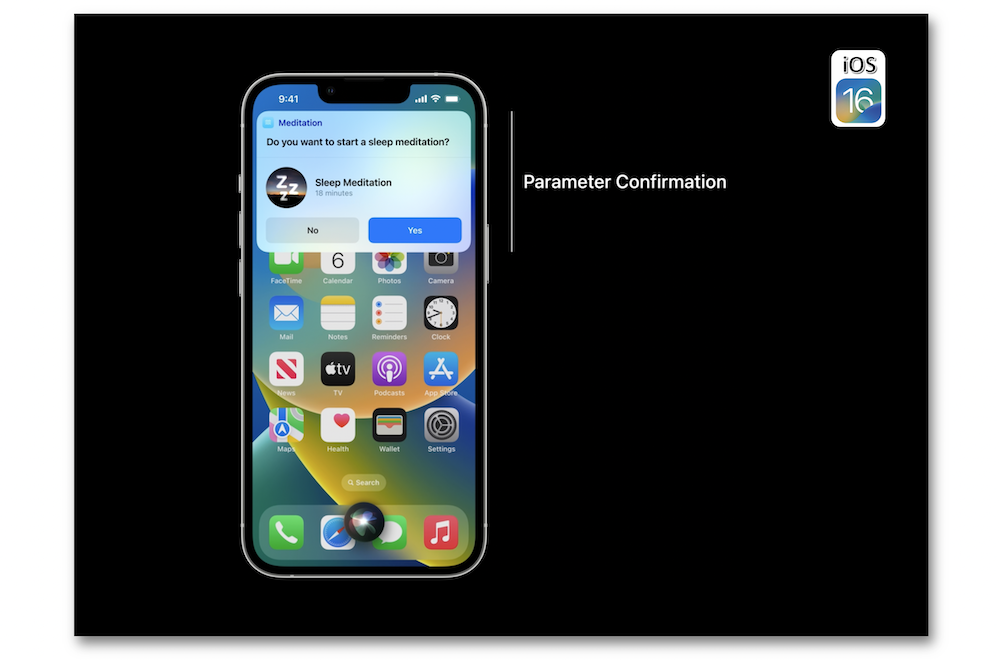
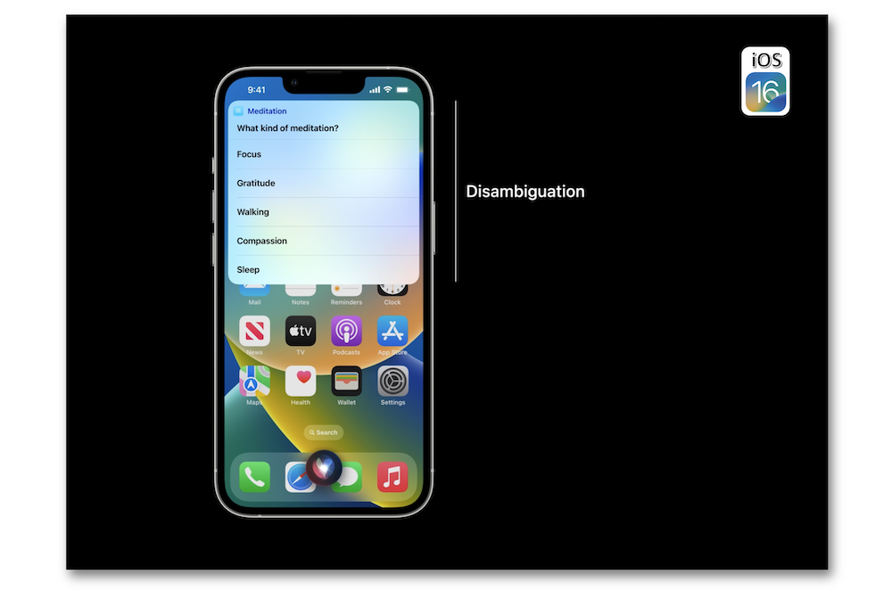
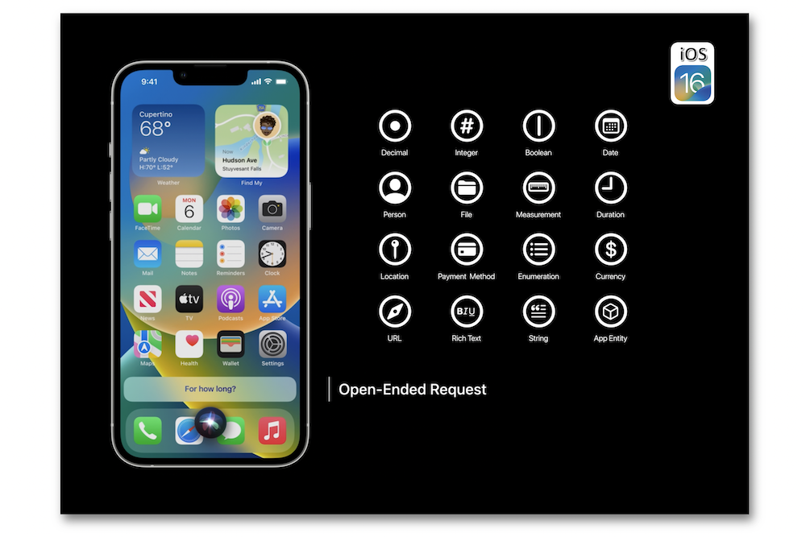
Were the required parameters well known by the system, the request options provided by the App Intent framework should be used to benefit the iOS native features.
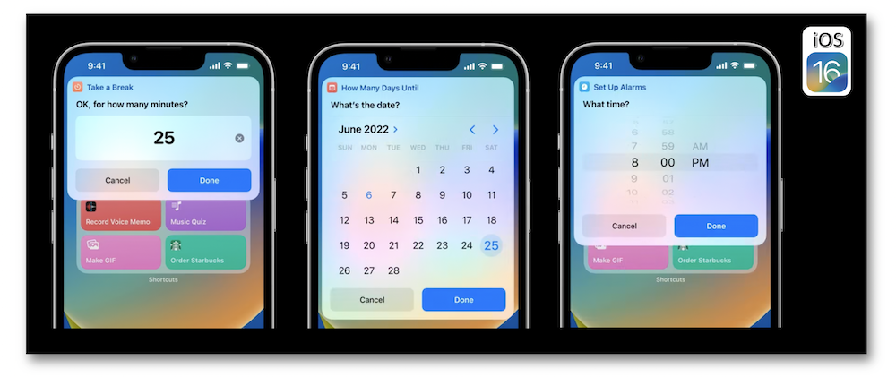
Discovery #
Two buttons may be added in an app to make its shortcuts discoverable.
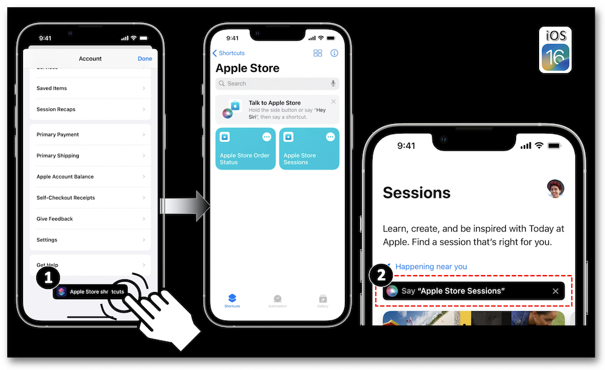